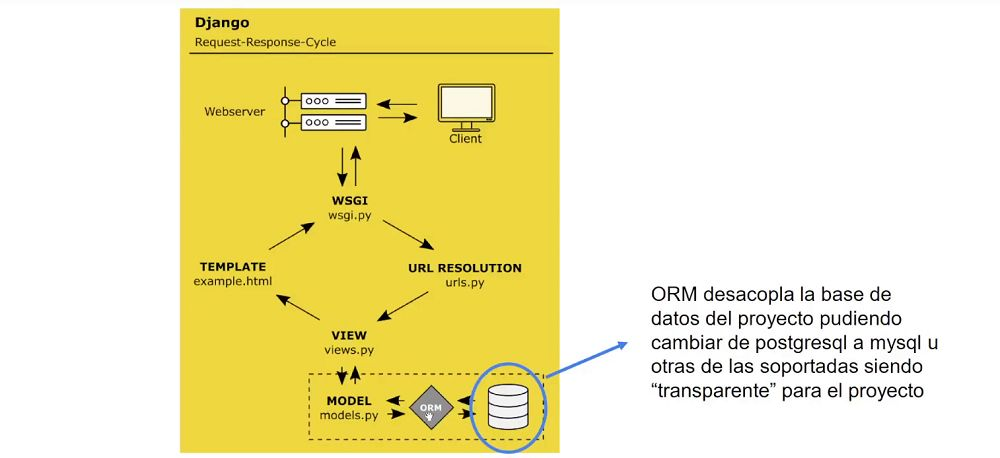
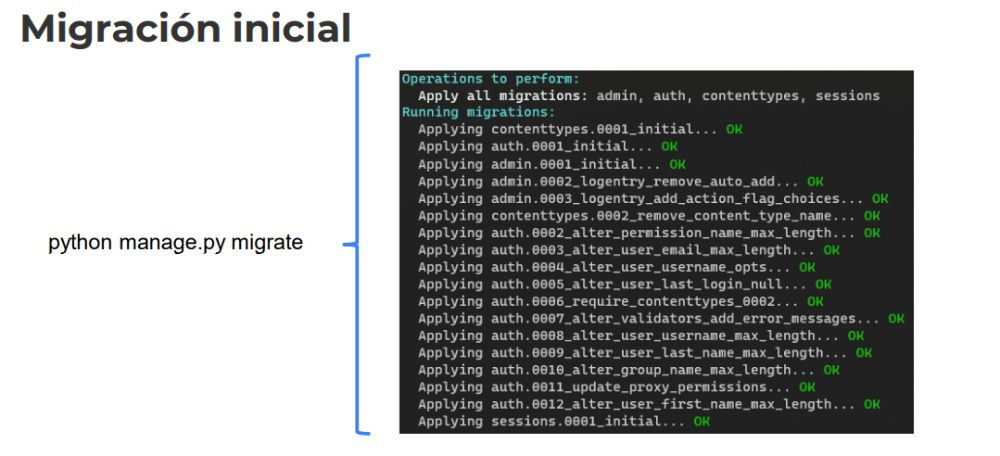

Desarrollo Django
1. Recordemos

ORM desacopla la base de datos del proyecto pudiendo
cambiar de postgresql a mysql u otras de las soportadas siendo
“transparente” para el proyecto
Configuramos desde el archivo settings.py
Necesitamos esa librería, con la cual django se comunica con la base de datos.
-> La librería resulta ser el "conector"
La instalamos dentro del entorno virtual..
- pip install psycopg2
2. ORM
El Orm, mapping o Orm, hace una traducción entre el modelo de clase y las tablas.
3. Django - Models first
Es decir, a través de los modelos que especifiquemos, modelaremos la base de datos.
Esta forma es para Django.. C# Tiene opciones.
* No es TAN importante el motor de base de datos..
- Lo importante es el armado de modelo, luego cambiamos el conector, de acuerdo a la librería para cambiar de base de datos.
Cada app dentro de nuestro proyecto, tendrá su propio models.py.. De acuerdo a las necesidades de nuestro proyecto.
Desde el modelo, va todo hacia las tablas..
Lo unico que creamos en el servidor, es la base de datos..
- Vacia, con el nombre deseado.
Django, pensado para Sql..
Mongo
4. ¿Qué son las Migraciones?
Las migraciones son la forma en que Django propaga los cambios que
realiza en sus modelos (agregar un campo, eliminar un modelo, etc) en
el esquema de su base de datos. Están diseñadas para ser en su
mayoría automáticas, pero es necesario saber cuando realizar
migraciones, ejecutarlas y que problemas se pueden enconrtar.
5. Migración inicial

Migraciones, son archivos de python..
Que registran todo.. Algo así como transacciones DDL
python manage.py migrate ->
Debemos iniciar el servicio de la base de datos.
Corrobar si la librería se encuentra... postgresql_psycopg2
----------------------- Desde settings de nuestro proyecto..
DATABASES = {
'default': {
'ENGINE': 'django.db.backends.postgresql_psycopg2',
'NAME': 'pig_22820_2',
'USER': 'postgres',
'PASSWORD': 'Fortin94',
# localhost en caso de tenerlo en local y la URL de la base de datos en caso de tenerlo en algún servicio en la nube
'HOST': 'localhost',
'PORT': '5432' # Si usas el puerto default no pongas esta línea y si lo has cambiado especifícaselo aquí
}
}
- python manage.py migrate -> Debemos correr.
* La información settings.py -> Se puede obviar en el gitignore.
Una configuración para ambiente local, remoto.. Good School for Django (Buenas Prácticas)
Podemos levantar el server con un setting en específico..
De esta manera podemos elegir el settings, en cuestión.
- python .\manage.py runserver --settings=nombreDelProyecto.settings
-----------------------
Las migraciones es una manera de traducir un modelo a una tabla en python.
- python manage.py makemigrations -> Crea todas las migraciones con las modificaiones realizadas.
- python manage.py migrate -> Aplicamos todas las migraciones en la tabla.
-----------------------